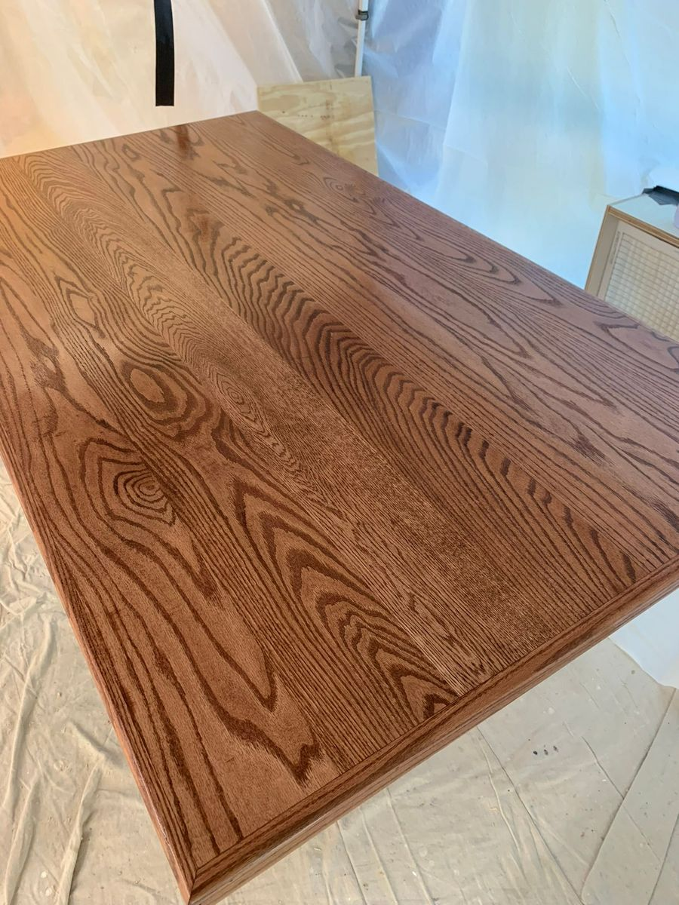

People ask me all the time: what makes one bowl different from another? The answer almost always starts with the wood.
When I walk into my shop and pick up a rough blank, I'm not just grabbing the nearest piece. I'm reading it — looking at the grain direction, checking for tension in the fibers, noticing where a branch used to be. Every piece of wood has a story written into its rings, and my job is to figure out how to tell that story.
Not All Hardwoods Are Created Equal
Take cherry and walnut, two of the most popular species I work with. Cherry starts out pale and almost pinkish, but give it a year of sunlight and it deepens into a rich, warm amber. It's forgiving on the lathe and finishes like silk. Walnut, on the other hand, comes off the tree already dark and dramatic. The grain is bolder, the contrasts sharper. It demands attention.
Then there's spalted maple — wood that's been partially colonized by fungi, leaving behind these wild, ink-like lines running through the grain. It's unpredictable and can be tricky to turn because the soft spots want to tear out. But when it works? There's nothing else like it.
Local Wood, Local Character
Most of the wood I use comes from right here in Knox County and the surrounding area. Fallen trees from storms, trees taken down for construction, logs that would otherwise end up as firewood or mulch. There's something satisfying about giving a 100-year-old oak that came down in someone's backyard a second life as a kitchen table.
Ohio grows incredible hardwoods — red and white oak, black walnut, sugar maple, ash, cherry. Working with local species means I know the wood. I know how it moves when it dries, how it responds to the tools, and what kind of finish will bring out the best in it.
The Conversation Between Maker and Material
Here's the thing nobody tells you about woodworking: you don't fully control the outcome. The wood has a say. A hidden crack might redirect your design. A knot in just the right spot might become the centerpiece of the whole piece. The best work happens when you stop fighting the material and start working with it.
That's what I love about this craft. Every piece of wood is a collaboration.